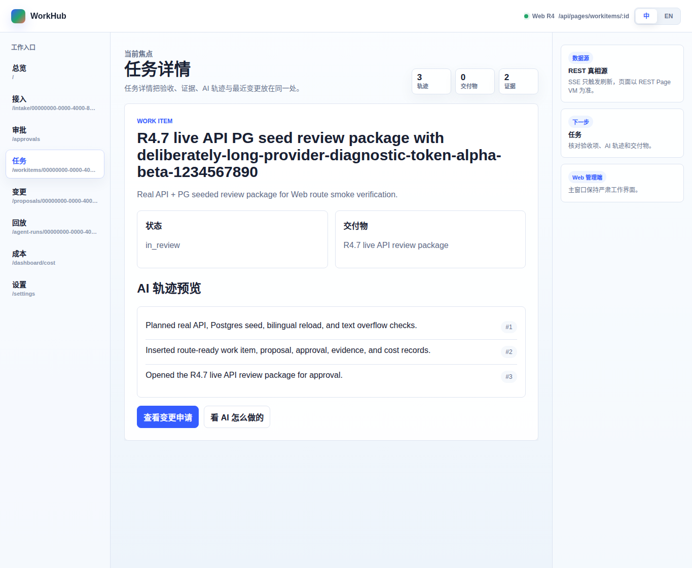
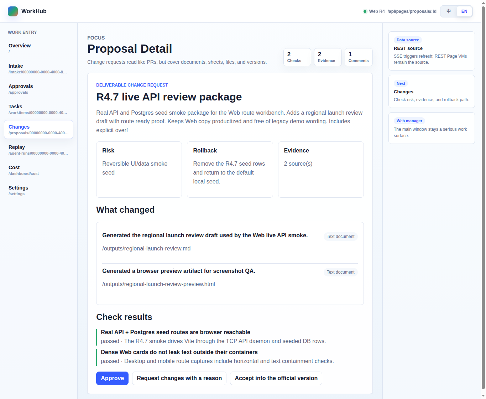
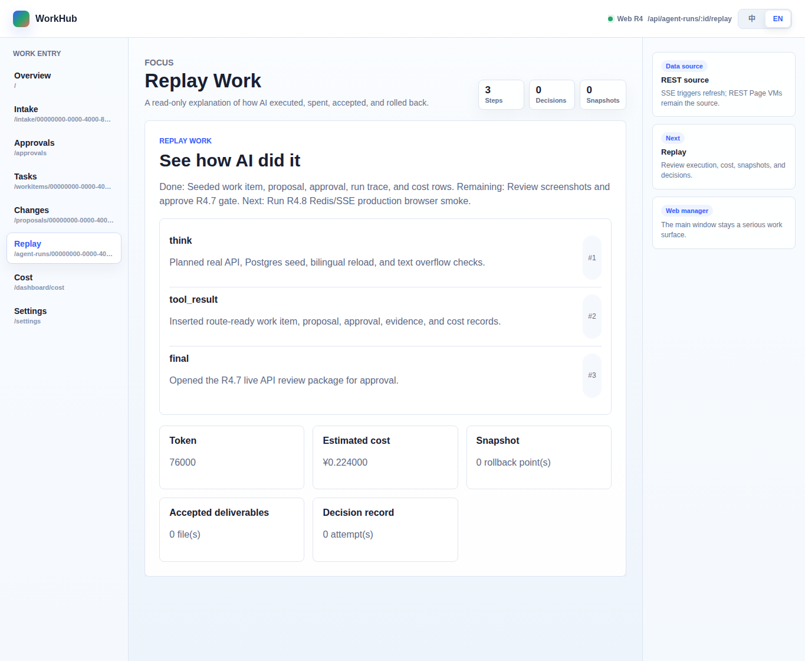
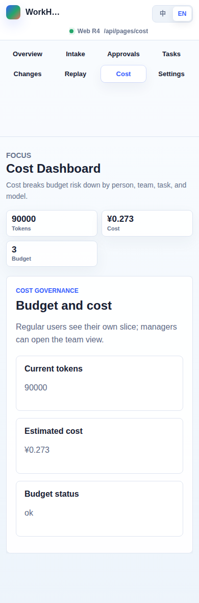

01-workitem-zh-desktop-locale-metrics · /workitems/00000000-0000-4000-8000-000000000104 · 任务详情
02-proposal-en-desktop-locale-actions · /proposals/00000000-0000-4000-8000-000000000108 · Proposal Detail
03-replay-en-desktop-vm-metrics · /agent-runs/00000000-0000-4000-8000-000000000107/replay · Replay Work
04-cost-en-mobile-vm-metrics · /dashboard/cost · Cost Dashboard